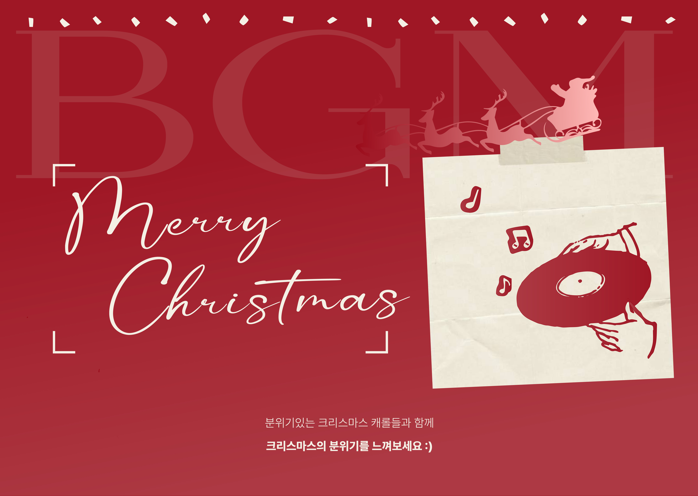
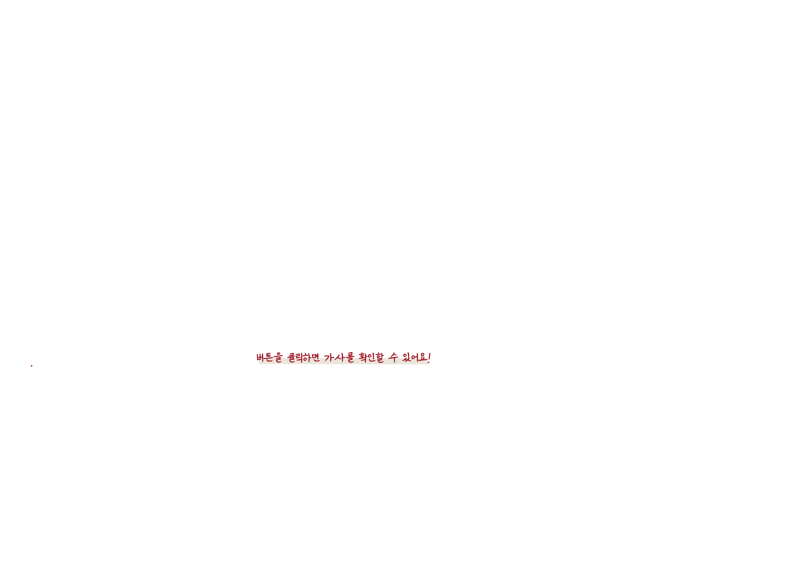
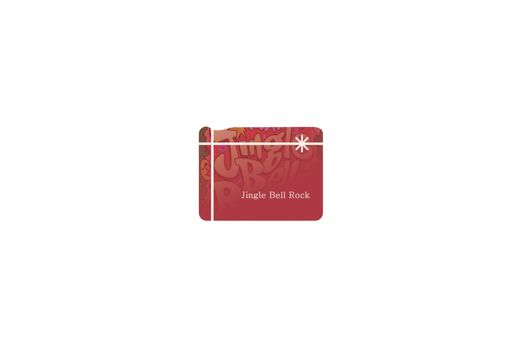
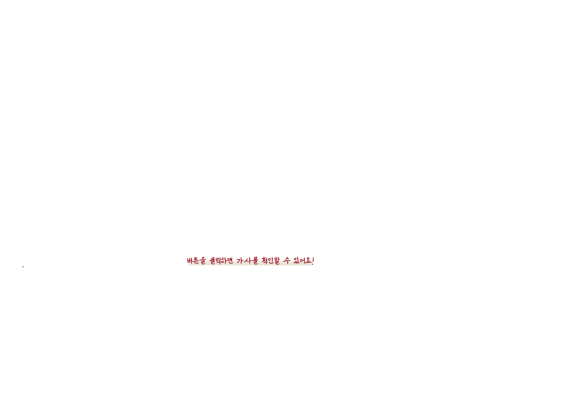
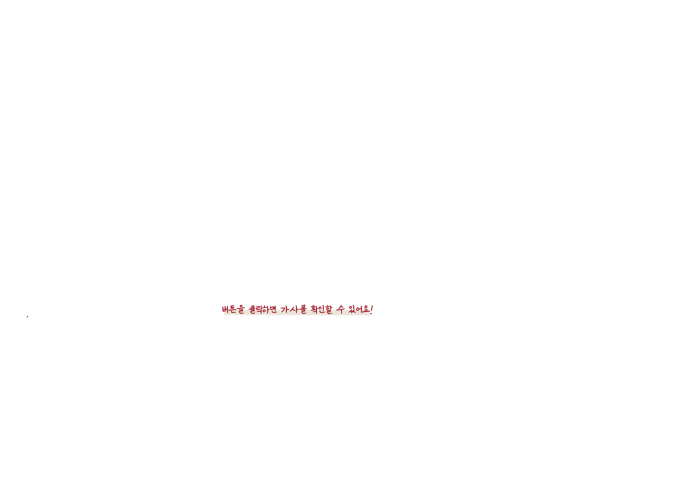
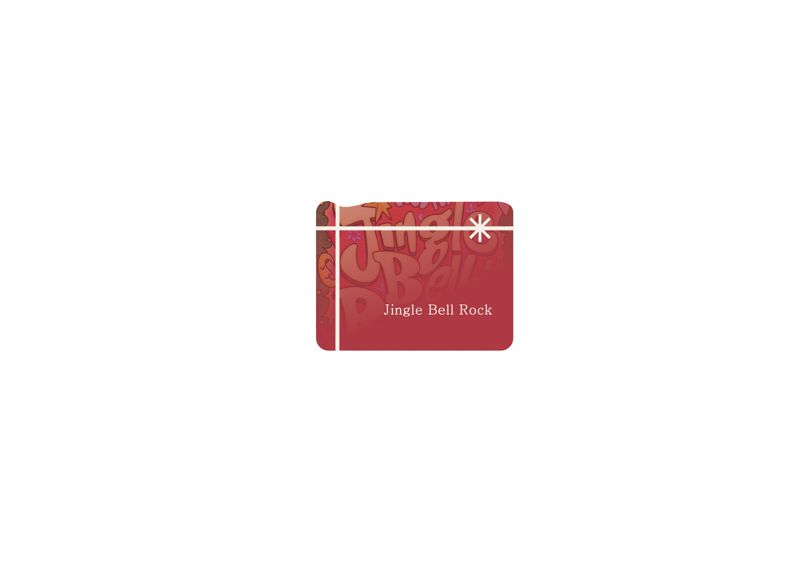
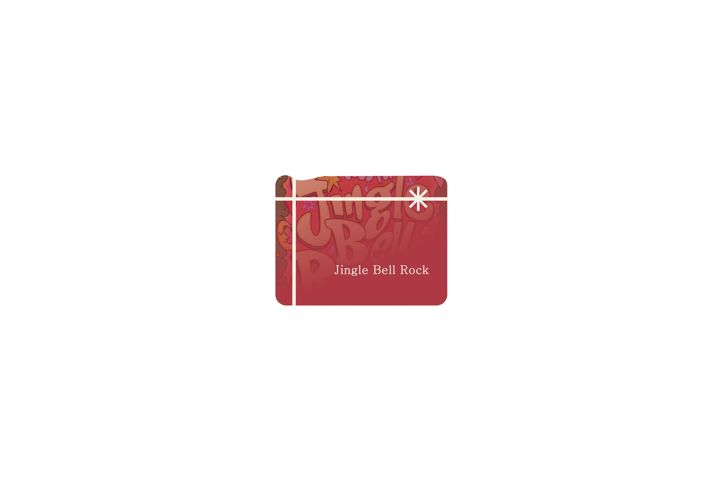

Your browser does not support the audio element.
 


[Lyrics lineup]
Aespa - Jingle Bell Rock
[2023]
Christmas album
Riize - Love 119
[2024]
Rizing
Exo - 첫 눈
[2013]
12월의 기적
The boyz - Chirstmassy! [2020]
Christmassy


 

 
